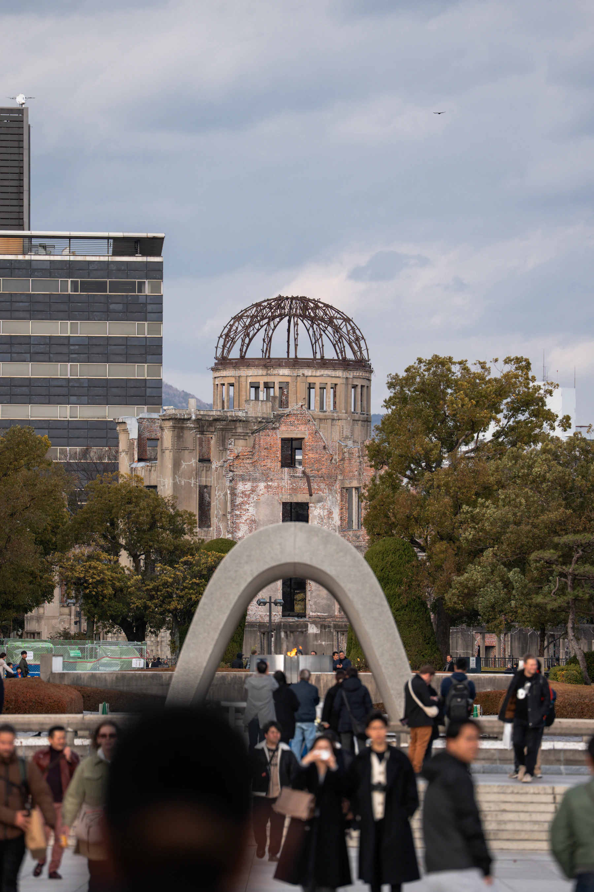
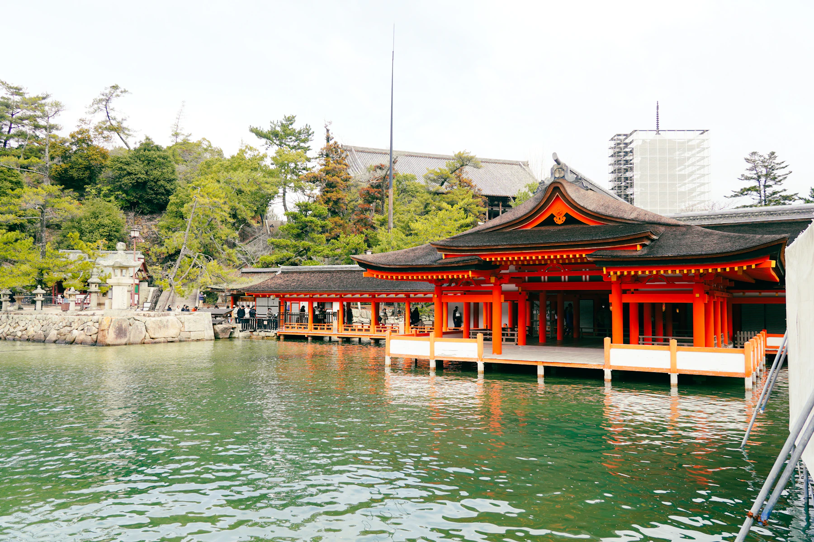
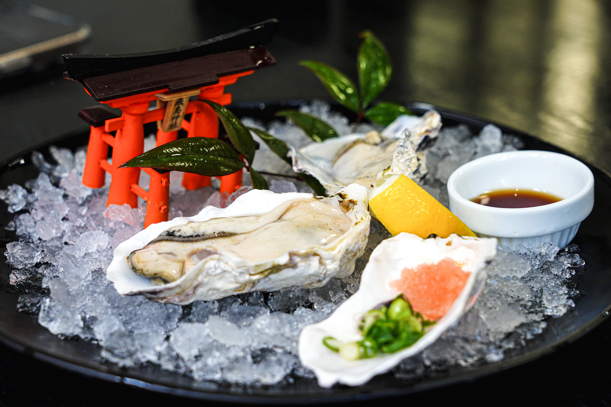
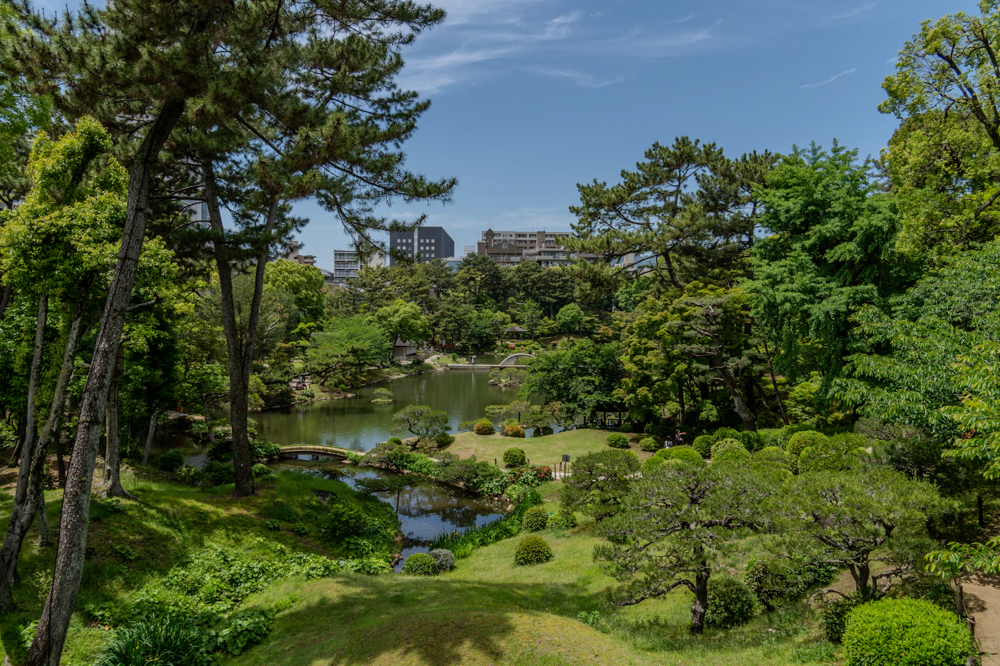

8.06 THU — 8.09 SUN
OUR SUMMER ESCAPE · 3 NIGHTS / 4 DAYS
海と祈り、
おいしい広島。
急がない。でも、忘れられない。
平和を想い、宮島を歩き、瀬戸内の海辺でほどける4日間。
4日間をのぞく
旅までの日数を計算中
2日目からの出発目安
温泉と海を眺める時間
牡蠣づくしの特別な夜
JOURNEY FLOW
街から島へ、そして海辺へ
- DAY 1 平和記念公園 祈りと、とうろうの灯り
- DAY 2 宮島 満ちる海と嚴島神社
- DAY 3 広島市街 お好み焼きと牡蠣の夜
- DAY 4 縮景園 静かな庭園で旅じまい
4 DAYS, 4 STORIES
この旅の、4つの物語。
時間に追われないよう、1日ごとにひとつの主役を決めました。

HIROSHIMA PEACE MEMORIALDAY01
8.06 THU · TOKYO → HIROSHIMA
祈りの場所へ。
灯りを見届ける夕暮れ。
広島に着いたその日に、時間をかけて平和の記憶と向き合います。 夜はホテルに戻り、海辺でゆっくり最初の食卓を。
東京駅→広島駅→平和記念公園→ホテル
-
東京駅を出発
のぞみ31号。新幹線でお昼を食べながら西へ。
-
広島駅に到着
新幹線口側のロッカーへ荷物を預け、16:30のめいぷる〜ぷへ。
-
原爆ドーム・平和記念公園
原爆の子の像、平和の鐘、慰霊碑をめぐる45分。
-
広島平和記念資料館
約50分、展示と静かに向き合う。
-
とうろう流し
元安川を流れる灯りを短時間見届ける。
-
無料シャトルでホテルへ
19:50着。チェックイン後は館内の中国料理「李芳」へ。
-
温泉で、長い一日をほどく
瀬戸の湯と部屋時間。明日に疲れを残さない。
この日だけは、18:30が判断ポイント
バスで広島駅19:05着が難しそうな場合のみ、タクシーへ切り替えます。

MIYAJIMA · HIGH TIDEDAY02
8.07 FRI · MIYAJIMA
海を渡って、
満ちゆく宮島へ。
ホテル前から高速船で26分。穴子飯や町歩きを楽しんだあと、 潮が満ちる午後に嚴島神社へ向かいます。
ホテル前桟橋≈宮島港→町家通り→嚴島神社
-
ホテル前から高速船
瀬戸内の景色ごと、宮島への移動を楽しむ。
-
表参道商店街・町家通り
まずは軽く歩いて、島の空気に馴染む。
-
「宮島いちわ」で穴子飯
予約して並ばずに。穴子飯とカキフライの組み合わせも。
-
カフェ・買い物・千畳閣周辺
暑い時間は屋内休憩を挟み、無理なく散策。
-
嚴島神社
16:33の満潮に近い時間。海に浮かぶ景色をゆっくり。
-
最終便でホテルへ
17:23着。そのまま温泉と部屋で休憩。
-
海を見下ろすディナーブッフェ
「トップ オブ ヒロシマ」で景色と料理を楽しむ90分。
TIDE NOTE
16:33 満潮
午前の干潮から、ゆっくり満ちていく日。

HIROSHIMA TABLEDAY03
8.08 SAT · HIROSHIMA CITY
鉄板の昼、
牡蠣づくしの夜。
広島お好み焼きから始まり、街を見晴らし、買い物へ。 旅のハイライトは、川に浮かぶ「かき船かなわ」の特別ディナーです。
ホテル→じぞう通り→おりづるタワー→かき船
-
路線バスで市内へ
紙屋町から短距離タクシーで、真夏の徒歩を減らす。
-
みっちゃん総本店
予約できるじぞう通り店で、そば入りの定番を。
-
おりづるタワー
街と原爆ドームを上から眺め、カフェとコンサートも。
-
本通商店街でひと休み
買い物とカフェ。夕食前にしっかり涼む。
-
かき船かなわ「瀬戸」
焼き牡蠣、グラタン、天ぷら、土手鍋、牡蠣飯。生牡蠣なしで予約。
-
バスでホテルへ
20:14ごろ到着。最終夜も温泉で締めくくる。
THE SPECIAL DINNER
かきの喰い切りコース
¥14,300 ／1名旅に一度だけの特別な食事。奥さまは広島のビールと一緒に。

SHUKKEIEN GARDENDAY04
8.09 SUN · HIROSHIMA → TOKYO
庭園を歩いて、
余韻のまま帰ろう。
最後まで急がず、広島駅に近い縮景園へ。 昼食とお土産も楽しみながら、出発1時間前には改札の中へ入ります。
ホテル→広島駅→縮景園→東京駅
-
チェックアウト
10:21の路線バスで、広島駅へ。
-
広島駅で荷物を預ける
新幹線口側のロッカーを優先。
-
縮景園
夏の緑と池の景色を、約50分ゆっくり散策。
-
広島駅で最後のランチ
つけ麺、または汁なし担担麺。その日の気分で。
-
ekie・ミナモアでお土産
14:50までに荷物を回収。
-
新幹線改札内へ
カフェで待機。乗車まで1時間以上の余裕。
-
広島を出発
のぞみ102号。東京20:06着。
PEACE OF MIND
乗車まで 72分の余白
最終日は遠くへ行かず、疲れと乗り遅れリスクを残しません。
TASTE OF HIROSHIMA
この街だから、
食べたいもの。
行列より、二人で落ち着いて過ごせること。 広島らしさはしっかり、味わい方は私たちらしく。
DAY 3 · LUNCH
広島お好み焼き
みっちゃん総本店 じぞう通り店
予約して、熱々を待ち時間なく。DAY 2 · LUNCH
宮島の穴子飯
宮島いちわ
香ばしい穴子と、カキフライも。DAY 3 · DINNER
牡蠣づくし
かき船かなわ 瀬戸
すべて十分に加熱。生牡蠣はなし。
DATETIMEPLACEPLANBUDGET / PERSON
8.0620:15中国料理 李芳ホテルで落ち着く最初の夕食約 ¥4,500
8.0712:00宮島いちわ穴子飯・カキフライ¥2,500–3,600
8.0719:00トップ オブ ヒロシマ海を見下ろすブッフェ¥6,300–7,000
8.0811:30みっちゃん総本店そば入り広島お好み焼き¥2,000–3,000
8.0817:00かき船かなわ 瀬戸加熱牡蠣の特別コース¥14,300 + drink
8.0912:40広島駅周辺つけ麺 or 汁なし担担麺¥1,000–2,000
OUR HOME BY THE SEA
帰るたび、
海が待っている。
グランドプリンスホテル広島
プレミアムリゾートフロア キング
朝食つき
温泉「瀬戸の湯」
宮島への高速船
BEFORE WE GO
あとは、予約するだけ。
現時点ではすべて未予約。大切なものから順に、 二人で準備を進められるチェックリストです。
予約の準備
0 / 7
PLAN B
もしもの時も、旅は続く。
新幹線が遅れたら
20分以内：公園40分・資料館45分に調整し、とうろう流しを短時間鑑賞。
20〜40分：公園・原爆ドーム・とうろう流しを優先。
40分超：資料館を3日目へ移し、おりづるタワーの時間を調整。
高速船が欠航したら
広島駅または宮島口へ移動し、JRと宮島口発のフェリーで宮島へ。宮島観光そのものは中止しません。
雨が降ったら
宮島は神社と町歩きに絞って短縮。3日目の市内グルメと屋内観光は予定どおり。縮景園は無理せず、広島駅での食事・買い物・カフェ時間へ置き換えます。
SEE YOU IN HIROSHIMA
きっと、忘れない夏になる。
2026.08.06 — 08.09
東京から、二人で。